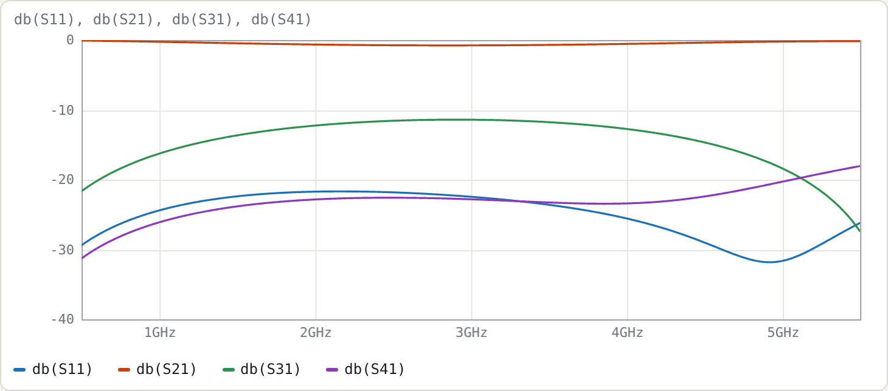

Example 7: Three-line section from C and L matrices
Netlist: examples/three-line-CL.cir
Goal: use the general C/L input, which is what a 2-D field solver gives you, for an inhomogeneous three-conductor section. Then read the modal analysis and build a symmetric coupler with the centre line as input.
The matrices here are illustrative: they have the structure and magnitudes of three coupled microstrip lines, but they are not the solution for a specific geometry.
Input
cline TL3
C [110p -28p -4p; -28p 125p -28p; -4p -28p 110p] # F/m (Maxwell matrix)
L [420n 140n 70n; 140n 400n 140n; 70n 140n 420n] # H/m
len 90deg
A l_cpl c_in r_cpl
B l_iso c_out r_iso
end
Requirements on the matrices:
- C is the Maxwell matrix. The diagonal is each line's total capacitance with the others grounded; the off-diagonals are negative. If your solver reports ground and mutual capacitances instead, convert with Cii = Cgi + ΣCmij and Cij = −Cmij.
- L is the inductance matrix. All entries are positive.
- Both are symmetric, and C must be positive definite.
The tool checks all three.
The modal analysis
The Line sections panel shows:
| mode | εeff | Zmode (Ω) | voltage vector (lines 1, 2, 3) |
|---|---|---|---|
| 1 | 4.3558 | 93.07 | [0.548 0.633 0.548] |
| 2 | 3.5860 | 55.41 | [−0.707 0 0.707] |
| 3 | 3.3969 | 39.38 | [−0.457 0.763 −0.457] |
How to read it:
- Number of modes. Three conductors give three quasi-TEM modes with three different velocities, which is the hallmark of an inhomogeneous medium.
- Mode 1 is the all-in-phase "even" mode. It has the most field in the substrate, so the highest εeff, and the highest impedance.
- Mode 2 is the antisymmetric outer-line mode. The centre line carries no voltage, because by symmetry it cannot couple to this mode.
- Mode 3 drives the centre line against the outer lines.
len 90deg is referenced to the mean of √εeff over the three modes, which gives 12.87 mm at 3 GHz. Each mode therefore sees a slightly different electrical length.
The characteristic admittance matrix Yc = W diag(v) Wᵀ (§9 of the manual) is, in mS,
[ 17.231 −5.051 −0.817 ]
[ −5.051 19.737 −5.051 ]
[ −0.817 −5.051 17.231 ]
Note the small but non-zero coupling between the outer lines (−0.817 mS). The Cg/Cm nearest-neighbour model in the filter examples ignores this kind of term unless you add it with Cm(1,3).
The coupler
Port 1 drives the centre line at end A. Port 2 is the centre line's other end. Ports 3/5 are the outer lines at the input end (coupled), and ports 4/6 are the outer lines at the far end (isolated).

| f (GHz) | S11 | S21 | S31 = S51 | S41 = S61 | total coupled (S31 + S51 power) |
|---|---|---|---|---|---|
| 1.5 | −22.38 | −0.46 | −13.64 | −23.82 | −10.63 dB |
| 3.0 | −22.44 | −0.76 | −11.40 | −22.80 | −8.39 dB |
| 4.5 | −29.00 | −0.37 | −14.66 | −22.40 | −11.65 dB |
- Symmetry.
db(S31/S51)is zero to 2e−13 dB, because the structure is symmetric and the centre line feeds both outer lines equally. - Directivity. It is only about 11 dB at f0, the same inhomogeneous-medium problem as in Example 2. Lumped compensation capacitors between the lines at each end would improve it.
- Match. The input is not matched to 50 Ω (S11 ≈ −22 dB). These matrices were not designed for a particular impedance; scaling C up and L down by the same factor lowers all impedances while leaving the velocities unchanged.
Try
- Multiply every entry of C by 1.2 and divide every entry of L by 1.2. The εeff values are unchanged and every Zmode drops by 1.2. Watch S11 change.
- Set L = μ0ε0·C0⁻¹ for some air-filled C0 to make your own physically consistent pair. A field solver gives you C and C0 (C with the dielectric removed), and L follows exactly that way.
- Replace the end connections to make a three-line comb or interdigital resonator array. For example,
A 0 0 0andB r1 r2 r3with loading capacitors gives an inhomogeneous comb-line, which the synthesiser does not yet cover.